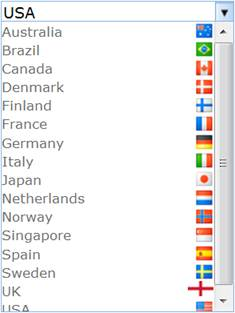

Generic Drop-Down provides extensive data binding support to populate Generic Drop-Down items so that the columns of a table can be mapped to the Generic Drop-Down properties, namely Id, Text, ImageUrl, SpriteCss, ImageAttributes, and HtmlAttributes.
Use Case Scenarios
The Data Binding feature helps users to plug-in data from a DataTable or DataSet to Generic Drop-Down.
Adding Data Binding to an Application
Data Binding in Generic Drop-Down can be customized by using two ways, namely:
· GenericDropDownBuilder
· GenericDropDownModel
Using GenericDropDownBuilder
To customize Data Binding in Generic Drop-Down by using GenericDropDownBuilder:
1. In the Controller, pass the data to the View page.
|
[Controller] public ActionResult Index() { Northwind data = SqlCE; // Passing the data to the View. return View(data.GenericDropDownData); } |
2. Create a Strongly Typed View.
3. In the View, invoke the GenericDropDown helper with the control ID.
4. Set the DataSource and BindTo methods.
|
View[ASPX]
<%=Html.Syncfusion().GenericDropDown("myGenericDropDown") .DataSource(Model) .BindTo(bind=> bind.Text("Title") .Id("GenericDropDownId") .SpriteCss("SpriteClass") .ImageUrl("ImagePath") .ImageAttributes("Imageattributes"))%> |
|
View[cshtml]
@{ Html.Syncfusion().GenericDropDown("myGenericDropDown") .DataSource(Model) .BindTo(bind=> bind.Text("Title") .Id("GenericDropDownId") .SpriteCss("SpriteClass") .ImageUrl("ImagePath") .ImageAttributes("Imageattributes")).Render();} |
5. Build and run the application.
Figure 141: Generic Drop-Down - Data Binding Using GenericDropDownBuilder
Using GenericDropDownModel
To customize Data Binding in Generic Drop-Down by using GenericDropDownModel:
1. In the Controller, create an object for the GenericDropDownModel class.
2. Set the DataSource and BindTo properties.
3. Pass the GenericDropDownModel class to the ViewData.
|
[Controller] public ActionResult Index() { Northwind context = SqlCE; GenericDropDownFields genericdropdownFields = new GenericDropDownFields() { Id = "Id", ParentId = "ParentId", Text = "Text", ImageUrl = "ImageUrl", SpriteCSS = "SpriteCSS" }; GenericDropDownModel genericdropdownModel = new GenericDropDownModel() { DataSource = context.DropDownData.ToList(), BindTo = genericdropdownFields, }; ViewData["myGenericDropDownModel"] = genericdropdownModel; return View(); } |
4. Create a View.
5. In the View, invoke the GenericDropDown helper with the control ID.
6. From the ViewData, assign the GenericDropDownModel class to the GenericDropDown helper.
|
View[ASPX]
<%=Html.Syncfusion().GenericDropDown("MyGenericDropDown", (GenericDropDownModel)ViewData["myGenericDropDownModel"]) %>
|
|
View[cshtml]
@{ Html.Syncfusion().GenericDropDown("MyGenericDropDown", (GenericDropDownModel)ViewData["myGenericDropDownModel"]).Render(); }
|
7. Build and run the application.

Figure 142: Generic Drop-Down - Data Binding Using GenericDropDownModel
Properties
The properties of the Data Dinding feature in Generic Drop-Down are described in the following tabulation:
|
Name |
Description |
Type |
Data Type |
Reference links |
|
DataSource |
Gets or sets the data source, which is used to populate Generic Drop-Down with the Generic Drop-Down items. |
Server-side |
IEnumerable |
Not applicable |
|
BindTo |
Maps the Generic Drop-Down fields to their respective columns from the data source. |
Server-side |
GenericDropDownFields |
Not applicable |
|
Id |
Gets or sets the ID column name. |
Server-side |
string |
Not applicable |
|
Text |
Gets or sets the text column name. |
Server-side |
string |
Not applicable |
|
SpriteCss |
Gets or sets the sprite column name. |
Server-side |
string |
Not applicable |
|
ImageUrl |
Gets or sets the image path column name. |
Server-side |
string |
Not applicable |
|
HtmlAttributes |
Gets or sets the HTML attributes column name. |
Server-side |
string |
Not applicable |
|
ImageAttributes |
Gets or sets the image attributes column name. |
Server-side |
string |
Not applicable |
Sample Link
To view a sample:
1. Open the Tools Sample Browser from the dashboard. (Refer to the Samples and Location chapter.)
2. Navigate to Tools.Mvc -> Generic Drop-Down -> Data Binding Demo.